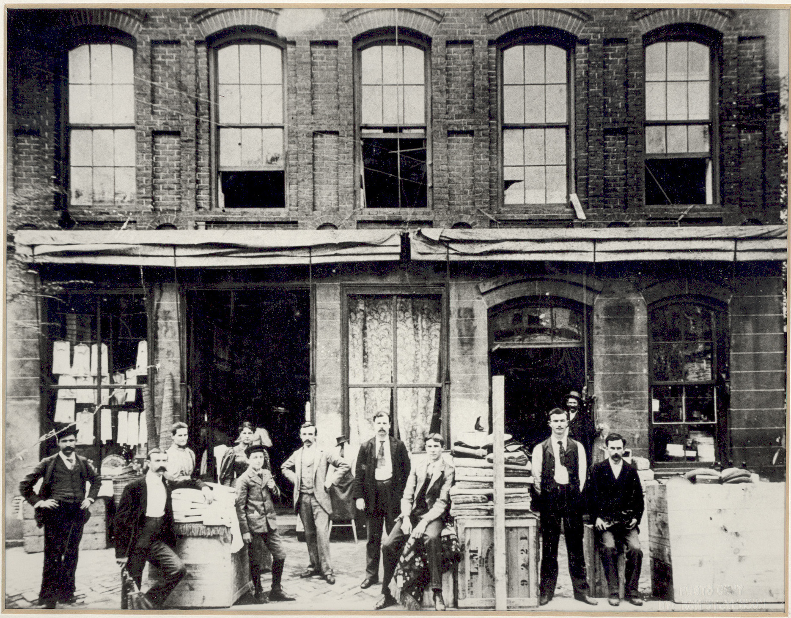
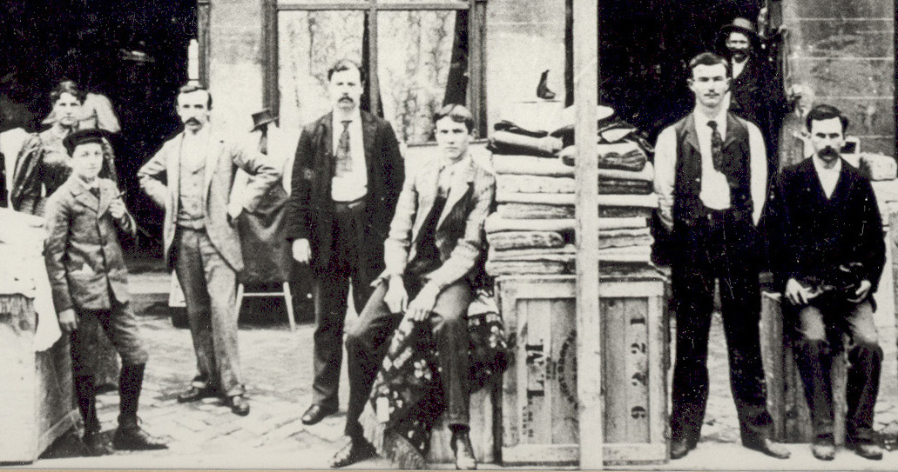

Here's a picture taken in front of the First Belk Store aka "New York Racket", Monroe, NC ca. 1890. While some sources suggest the photo was taken in 1897, an old newspaper article quotes Henry Belk as implying it was taken in 1890 (Monroe Enquirer 1 Sep 1938).

Here's a close up l-r: 1. Carrie Rudge, 2. Henry Brown, 3. Dr. Redfearn, 4. Ed Austin, 6. Will Rudge, 7. Henry Walkup, 8. Unidentified man in doorway, 9. Billy Benton. Will Rudge would have been about 14 in 1890, and this seems correct.

Last updated on 2 Nov 2009